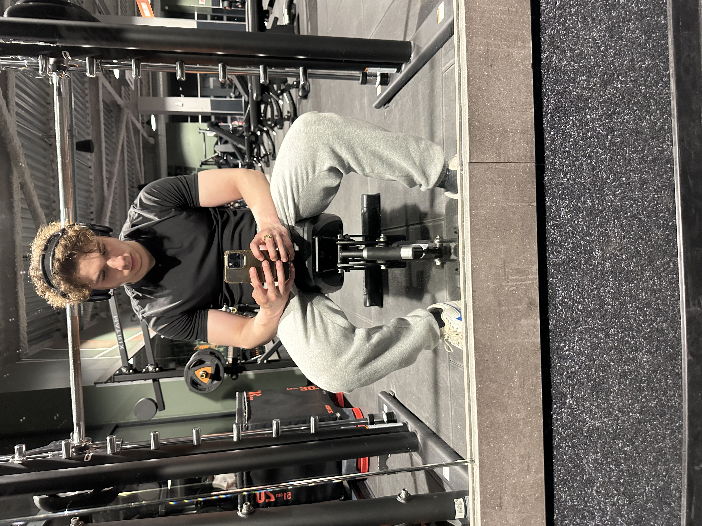
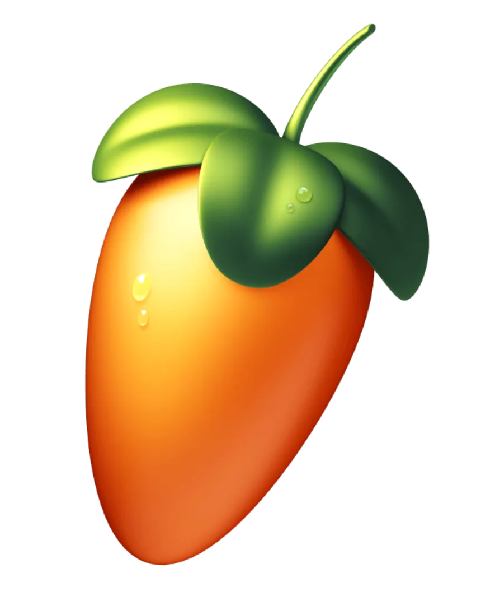

Programmation
Depuis petit, je trouve une passion pour le code. En effet, j'aime concevoir des choses de moi même, et j'aime apprendre de nombreux langages. Je suis toujours à la recherche de nouveaux défis et de nouvelles technologies à explorer.
J'ai notamment appris à utiliser Python, Java, C++, et JavaScript, et je continue à me former sur des frameworks comme React et Node.js. J'ai fais des projets comme un site web de gestion de tâches, une application de suivi de dépenses, et un jeu vidéo en Java. J'aime aussi participer à des hackathons et des compétitions de programmation pour améliorer mes compétences et rencontrer d'autres passionnés. Pour finir, je me suis formé sur W3Schools, OpenClassrooms, et Udemy, où j'ai suivi des cours sur la programmation orientée objet, et les bases de données.
Automobile

Pour moi, être passionné par l'automobile va bien au-delà d'un simple intérêt. J'admire le travail d'ingénierie minutieux qui se cache derrière chaque véhicule, je suis fasciné par les lignes intemporelles des modèles anciens et je suis captivé par le rugissement des moteurs qui semblent raconter une histoire à chaque démarrage. J'aime déambuler sur les parkings lors de rassemblements automobiles, échanger avec d'autres passionnés, partager des anecdotes passionnantes sur des modèles emblématiques ou des restaurations faites avec passion. Assister à des courses me permet de ressentir toute l'intensité de la compétition, de ressentir la tension palpable avant le départ et de frissonner à chaque virage. C'est pour moi aussi un moyen de me connecter à l'histoire de l'automobile, de témoigner mon respect envers les machines et les pilotes qui ont marqué leur époque.
Sport
Depuis mon enfance, le sport a toujours joué un rôle essentiel dans ma vie. Mon tout premier amour a été le tennis, un sport qui m'a inculqué des valeurs telles que la précision, la patience et le goût de l'effort solitaire. En parallèle, j'ai également pratiqué le basket, où j'ai découvert l'importance de l'esprit d'équipe, de la réactivité et de l'intensité du jeu collectif. Au fil du temps, j'ai ressenti le besoin d'explorer d'autres disciplines sportives, notamment les sports de combat comme le MMA, qui m'ont permis de me forger mentalement et physiquement. Ces sports m'ont enseigné la rigueur, la discipline et le respect de soi et de l'adversaire. J'ai également pratiqué des sports plus techniques tels que le ping-pong et le badminton, qui requièrent coordination, agilité et concentration. Aujourd'hui, c'est dans la musculation que je trouve pleinement satisfaction. Cette discipline est devenue une véritable passion pour moi. J'apprécie le fait de repousser mes limites, d'organiser mes séances, de suivre ma progression et de constater les résultats tangibles de mes efforts. Pour moi, la musculation va bien au-delà d'une simple activité physique : c'est un véritable mode de vie, une discipline quotidienne, un équilibre harmonieux entre le corps et l'esprit.
Musique
Ma passion pour la musique m’a permis de m’exprimer de manière unique, sans recourir aux mots. Chaque mélodie, chaque rythme que je créais traduisait un état d’esprit, une émotion, une ambiance. J’y consacrais des heures, plongé profondément dans mes projets, cherchant le son parfait, ajustant les moindres détails pour obtenir une harmonie parfaite. Grâce à FL Studio, j’ai pu explorer différents styles musicaux, du rap à la trap, en passant par des atmosphères plus détendues ou cinématographiques. J’aimais particulièrement collaborer avec d'autres artistes, comprendre leur univers et leur proposer des instrumentales qui leur correspondaient, qui les inspiraient. C’était un véritable échange créatif, et chaque projet m’apportait une richesse nouvelle. Même si aujourd’hui je suis très investi dans la musculation et d’autres activités, la musique reste un pilier essentiel dans ma vie. Elle fait partie intégrante de mon équilibre. Elle m'accompagne partout - dans mes écouteurs, dans mes pensées, dans mes créations - et continue de nourrir ma créativité. Pour moi, créer de la musique va bien au-delà d'un simple passe-temps : c’est un mode de vie, une manière de ressentir et de partager mes émotions.